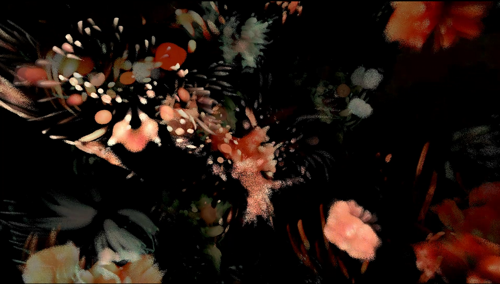
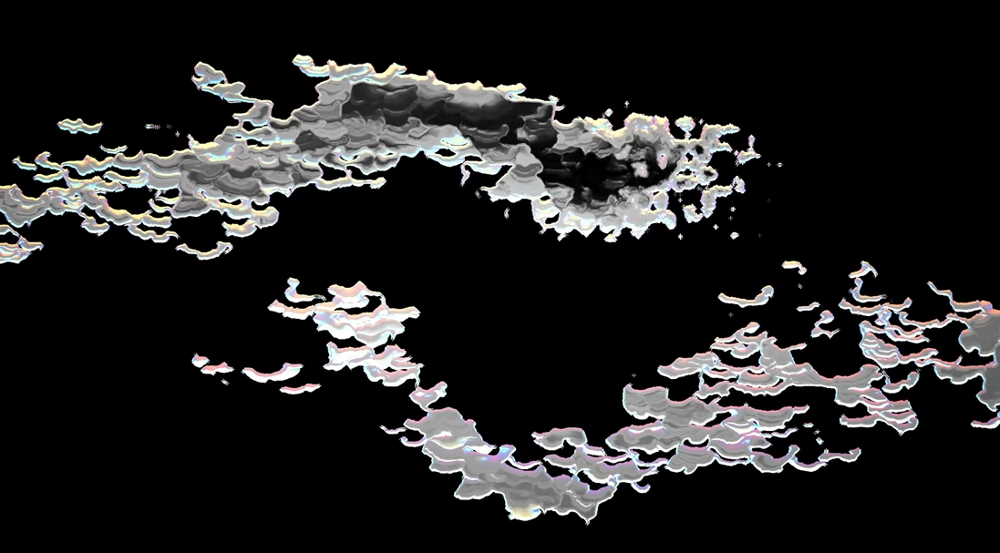
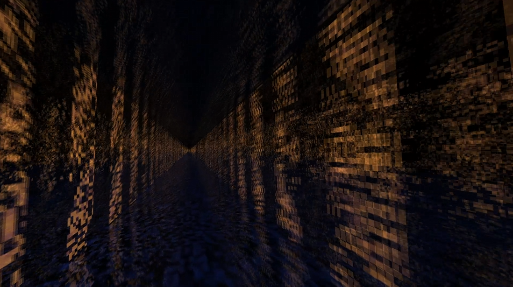
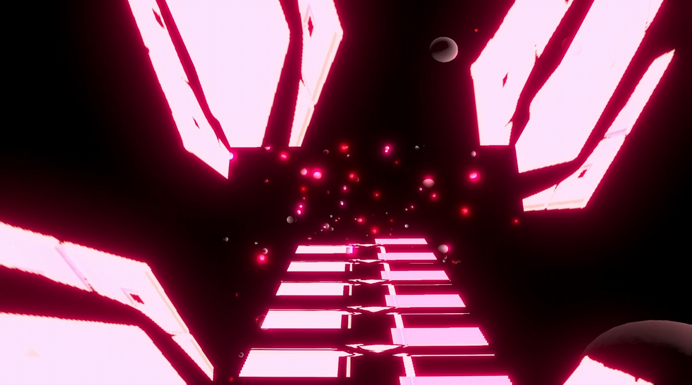
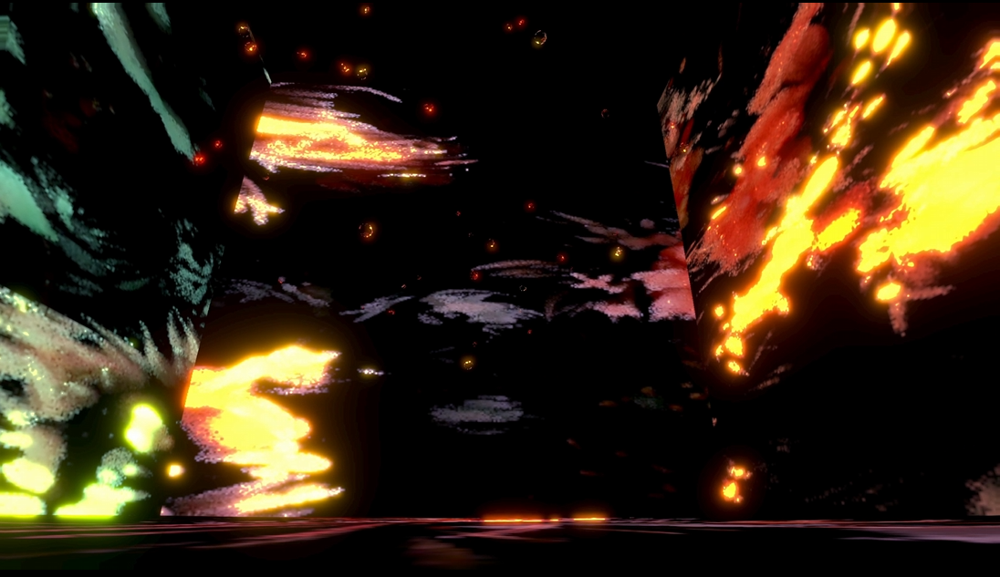
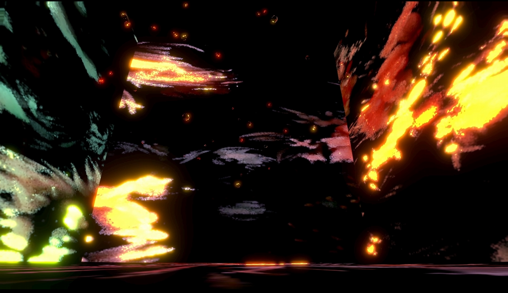
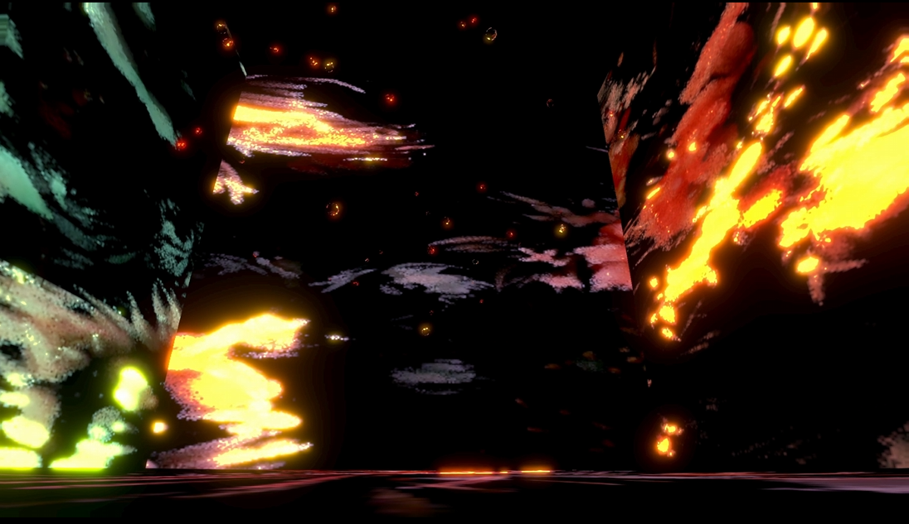
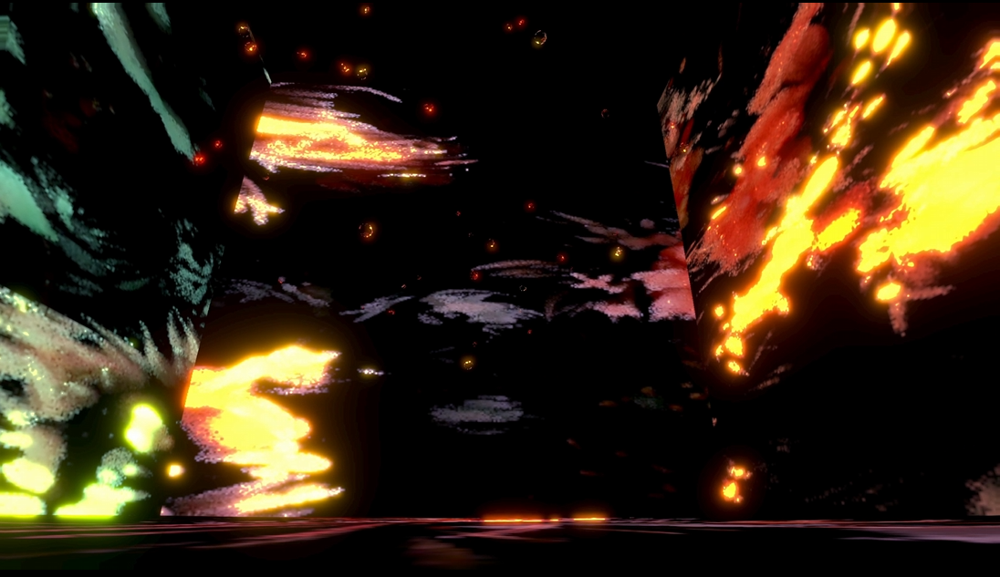

C++、DirectX、HLSL、ComputeShaderを使用して作成しました。使用音源も自作の物を使用しています。
GLSLで作成した作品です。



開発中のゲームです。音楽、プレイヤー、映像が相互作用したゲームを作りたいと思い、現在開発中です。

 


道家雅輝
現在世田谷区に住んでいます。今まで四つ程のゲーム開発プロジェクトに参画し、現在は遊技機のアプリ移植をしています。
ゲーム開発のプロジェクトでは主にキャラクター、服の揺れもの、UI、カメラ周りの機能実装や、ツールの開発をしていました。
また、PHPとMagiconionを使用してサーバーサイドの実装も少しだけ行っていました。
現在従事している会社では、パチスロの実機ソースをC/C++、DirectX、OpenGLを使用してWindows、Mac、Android、IOSに移植するお仕事をしています。
就業後や休日には、Shaderを使用した作品の制作、DirectX、OpenGL、Unity等を使用したゲームの制作、Dawを使用した音楽制作、
Daw向けのプラグイン制作などを行っています。プログラムの学習、開発のお仕事が大好きです。
守秘義務契約により個人で制作した作品のみ掲載させていただきます。
C++、DirectX、HLSL、ComputeShaderを使用して作成しました。使用音源も自作の物を使用しています。
GLSLで作成した作品です。
開発中のゲームです。音楽、プレイヤー、映像が相互作用したゲームを作りたいと思い、現在開発中です。

Mail masaki110500@gmail.com
携帯 080-8437-9554